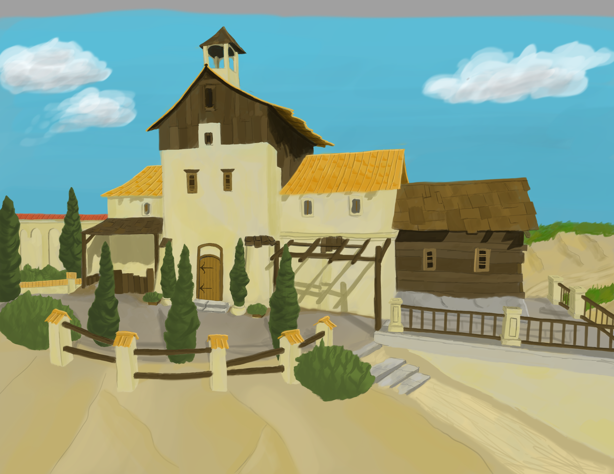

Hi, it me, I do things sometimes. This text just needs to fill enough space to make a difference. Hwat, wae gardaena, in geardagum, theodcunina, thrym ge frunon, hy tha aethelingas, ellen fremedon. Oft Scyld Scefing, sceatheana theatrum, monegum magthum, meoda setla oftea, egsode eorle, sythan earest wearth, feasceaft funden, he thas frofre gebad, weox under wylcnum, weorth myndum tha, uythat hm aegwylk, thara ym sittendra, ofer hron rade, hyran scolde, gomban gyldan, that was god cyning.
